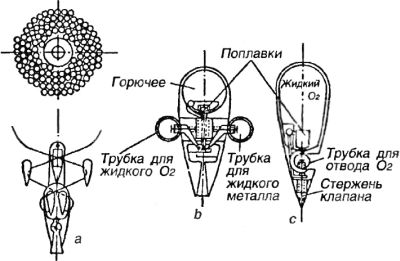
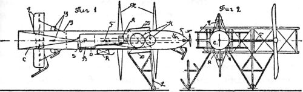
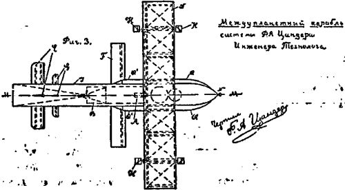
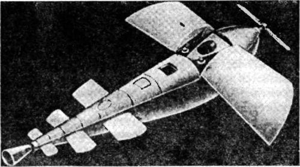

Ракетопланы Фридриха Цандера
В работе «Основы построения газовых машин, моторов и летательных приборов» Циолковский, в частности, пишет, что его предыдущие проекты (разгонные железнодорожные эстакады и ракетные поезда) осуществимы, но на данном этапе (речь, напомню, идет о 30-х годах) они слишком дороги. Далее Константин Эдуардович рассказывает читателю, как можно быстро и дешево достичь космических скоростей:
«Прием же группы первых слабых машин и переливание взрывчатых веществ гораздо доступнее для состояния умов современного человечества. Уже один ракетоплан побудит к последующему опыту с двумя одинаковыми и несовершенными приборами.
Сами по себе они ценны, т. е. и в одиночку могут служить народам. Опыты с несколькими ракетопланами будут производиться между прочим, как интересные трюки. Но эти трюки приведут неизбежно к получению космических скоростей.
Итак, основа этого успеха — получение первого, хотя бы и плохого ракетоплана. Построение таких же одинаковых снарядов двинет дело увеличения скоростей, которому как бы нет предела».
Гениальный ученый, видимо, не понимал, что тиражирование «плохих» ракетопланов, скорее, вредит делу достижения космических скоростей, дискредитируя саму идею. Но жил в России человек, который считал, что ракетопланы должны быть хорошими, потому что именно им суждено стать тем транспортным средством, которое позволит человеку подняться за пределы атмосферы. Этого человека звали Фридрих Артурович Цандер.
Вопросами межпланетных сообщений Цандер начал интересоваться очень рано. Уже в детские годы он с увлечением читал научно-фантастические книги о путешествиях на другие планеты и мечтал о полетах к звездам.
Начало научных изысканий Цандера в этой области относится к 1907–1908 годам, когда он впервые стал задумываться над такими вопросами, связанными с устройством космических кораблей, как «условия, определяющие форму корабля, место для горючего, переработка солнечного тепла, выбор движущей силы» и так далее. Тогда же им были сделаны первые расчеты, относящиеся к истечению газов из сосудов, к работе, необходимой для преодоления притяжения Земли, и некоторым другим вопросам, связанным с проблемами космонавтики, а в 1909 году им была впервые высказана мысль о желательности использования твердого строительного материала ракеты в качестве горючего — принцип так называемой «самосжигаемой» ракеты. Впоследствии Цандер неоднократно возвращался к этой идее. Например, в своей поздней работе «Проблема полета при помощи реактивных аппаратов» (1932 год) он описывает этот проект следующим образом:
«Центральная ракета, окруженная множеством боковых ракет и сосудов для горючего в кислорода
На чертеже представлена схема одной центральной ракеты и многих боковых сосудов и боковых ракет, нанизанных на ветвях расходящихся спиралей. Два боковых сосуда показаны находящимися уже внутри центральной ракеты для расплавления. Если нанизывать все большее число боковых ракет и сосудов на ветви спирали, то и высота полета все больше увеличивается. Ветви спирали могут состоять из труб, по которым, пользуясь особой клапанной системой, можно перевести как горючее, так и кислород для горения. <…> В носовой части видны сосуды для горючего и жидкого кислорода, внутри их имеется поплавок, который при опоражнивании сосуда рычагом освобождает пружины, которые закрывают и открывают клапаны по мере необходимости и дают скользить сосуду в центральную ракету для расплавления. И здесь можно себе представить громадное количество вариантов, а также и такую схему, при которой ряд центральных ракет летит вместе, причем они в дальнейшем попадут в одну наиболее центральную ракету, т. е. повторяется процесс, описанный выше. Ввиду того, что отдельные сосуды и боковые ракеты можно делать складываемыми как зонт, они могут сначала весить значительно больше центральной ракеты и все же расплавляться в ней, так что можно себе представить, что вес к концу полета будет равен лишь одной тысячной доле начального веса, т. е. одна часть получит энергию с 999 сжигаемых частей; такого большого расхода горючего не требуется даже для перелета на другую планету. <…> Можно в данном случае устроить полет также без всякого жидкого горючего, тогда отдельные части конструкции можно делать особо крепкими и все толстые части затем использовать в качестве горючего, так что окончательный вес из-за некоторой сложности конструкции не увеличится при данном начальном весе».

Фридрих Цандер был убежденным сторонником экономии в деле строительства космического корабля. Он не воспринимал атмосферу как препятствие, изыскивая способы использовать ее ресурсы для облегчения подъема на орбитальную высоту. Понятно, что очень скоро он пришел к необходимости замены простой ракетной схемы ракетопланом с комбинированной двигательной установкой.
Признавая в своих работах авторитет и приоритет Циолковского, Цандер открыто полемизирует с ним, доказывая преимущества своего проекта.
В самом общем виде этот проект выглядит так. Межпланетный корабль Цандера служил фюзеляжем большого самолета и, кроме того, снабжался дополнительно небольшими крыльями, предназначенными для спуска. При полете в низших, более плотных слоях атмосферы в качестве силовой установки должен был служить либо разработанный Цандером поршневой двигатель особой конструкции, работавший на бензине и жидком кислороде, либо воздушно-реактивный двигатель, использовавший в качестве окислителя кислород окружающего воздуха.
При достижении же высоких разреженных слоев атмосферы должны были включаться жидкостные ракетные двигатели, а ставшие ненужными части большого самолета, изготовленные из металлов с высокой теплотворной способностью, должны были втягиваться в корпус и расплавляться с тем, чтобы использоваться в качестве дополнительного горючего. Для спуска на Землю или другие планеты, обладающие атмосферой, должны были служить добавочные малые крылья, дававшие возможность совершать посадку без каких-либо затрат горючего.



Вот описание межпланетного космического корабля на основе аэроплана с жидкостным ракетным двигателем и сжигаемыми частями, приведенное в одной из работ Цандера:
«На чертеже <… > дана разработанная мною схема аэроплана, у которого наружные части могут втягиваться при помощи конических барабанов с образующей соответственной формы, на которые наматываются тросы, втягивающие секции крыльев и все остальные части в сосуд для расплавления и использования в качестве горючего. Ввиду того, что пути отдельных частей составляют в среднем не больше 5–8 м, барабаны выходят малыми; части аэроплана, которыми при этом можно воспользоваться, мною были до некоторой степени исследованы и рассчитаны на крепость; оказывается, что такой аэроплан мог бы взять в счет веса разбираемых соединений с собою приблизительно лишь на 10 % от общего веса аэроплана меньше жидкого горючего, чем обыкновенный аэроплан. Крылья аэроплана состоят из отдельных секций, находящихся в особой раме; они занижают наибольшую площадь из тех [частей], которые подлежат перемещению; но в некоторых конструкциях аэропланов для увеличения скорости полета площадь крыльев может уменьшаться во время полета до 1/3 части нормальной величины, так что произведенное здесь перемещение — только один шаг вперед. Остальные части: рули большого аэроплана и высокую подставку втягивать, по моим подсчетам, уже нетрудно. К концу полета от аэроплана может оставаться только корпус; на нем маленькие крылья <… > и маленькие рули. Некоторые части корпуса также могут еще быть, в случае необходимости, после значительного уменьшения веса корабля использованы в качестве горючего. <… > Схемы складывания и втягивания частей, а также и порядок производства этих работ могут быть самыми разнообразными, и здесь представляется изобретательству еще широкое поле. Начинать сжигание надо с наименее необходимых и наиболее дешевых частей. Во многих случаях может потребоваться сжигание лишь небольшого количества частей, а не всех имеющихся. Необходимо стремиться к наибольшей простоте и дешевизне сжигаемых деталей. По мере усовершенствования количество сжигаемых частей будет уменьшаться, ко пока идет вопрос о «завоевании» межпланетного пространства, цена одного аэроплана будет играть лишь весьма незначительную роль.
Другие методы для отлета с земного шара еще не достигают цели, а при предложенном здесь методе можно себе легко представить окончательный вес опорожненного летательного аппарата равным лишь одной сотой части полного веса, т. е. порожний летательный аппарат будет получать тепловую энергию с веса, который в 99 раз больше его веса. Это при рассмотренных выше конструкциях реактивных двигателей дает полную гарантию для достижения межпланетных скоростей».
Как видите, Цандер старался сделать предельно экономичную схему. Он всячески подчеркивает, что простая ракета конструкции Циолковского или Оберта слишком дорога, чтобы использовать ее как средство для межпланетных перелетов:
«Для полета в высшие слои атмосферы, а также для спуска на планеты, обладающие атмосферою, будет выгодно применять аэроплан, как конструкцию, поддерживающую межпланетный корабль в атмосфере. Аэропланы, обладающие способностью производить планирующий спуск в случае остановки двигателя, во многом превосходят парашют, предлагаемый для обратного спуска на землю Обертом в его книге: «Ракета к планетам».
При парашюте отпадает возможность свободного выбора места спуска и дальнейшего полета в случае временной остановки двигателя, так что его следовало бы применять лишь для полетов без людей. Ту же часть ракеты, которою управляет человек, необходимо снабжать аэропланом. Для спуска же на планету, обладающую достаточной атмосферой, пользоваться ракетой, как это предлагает К. Э. Циолковский, также будет менее выгодно, нежели пользование планером или аэропланом — с двигателем, ибо ракета израсходует на спуск много горючего, а спуск с нею будет стоить, даже при ракете на одного человека, десятки тысяч рублей. Между тем как спуск на аэроплане стоит лишь несколько десятков рублей, а на планере и совсем ничего не стоит. Произведенные же расчеты ясно указывают на полную возможность медленного безопасного планирующего спуска на землю».
Цандер также указывает на то, что в 1920-е годы накоплен изрядный опыт в производстве самолетов, и использование этого опыта гораздо скорее приблизит наступление космической эры, нежели проектирование и отработка мощных и дорогих ракет.
Стремление Фридриха Цандера максимально снизить стоимость межпланетного перелета проявилось и в его работах, посвященных космическим кораблям, использующим для своего движения давление солнечных лучей или электростатическое взаимодействие. Цитирую по статье Цандера «Перелеты на другие планеты» 1924 года:
«При желании перелететь на другие планеты необходимо довести скорость полета до 11,18 км/сек. В этом случае можно воспользоваться ракетой, ко, вероятно, выгоднее будет лететь при помощи зеркал или экранов из тончайших листов. Экраны должны вращаться вокруг их центральной оси для придания им жесткости. Зеркала не требуют горючего и в случае надобности могут быть использованы в ракете в качестве топлива. Это два преимущества зеркал; кроме того, они не производят больших напряжений в материале корабля и имеют меньший вес, нежели ракета вместе с горючим. Но зато зеркала могут быть легче взорваны метеорами, нежели ракета.
<… > Взамен экранов можно будет, по всей вероятности, применять кольца, по которым течет электрический ток, причем внутри кольца будет расположена железная пыль, удерживаемая вблизи плоскости кольца силами электрического поля. Пылинки должны быть наэлектризованы статическим электричеством для того, чтобы они держались на некотором расстоянии друг от друга.
Если солнечный свет упадет на зеркало, экран или пылинки, он произведет на них определенное давление. При огромных расстояниях межпланетных пространств малые силы дают сравнительно большие скорости полета.
<…> Если в межпланетном пространстве будут устроены огромные вогнутые зеркала, которые будут вращаться вместе с астрономическими направляющими трубами вокруг планет, то солнечный свет, собранный зеркалами и направленный на пролетающий на другую планету межпланетный корабль, даст скорости, превышающие во много раз скорости ракет».
Таким образом, Цандер одним из первых выдвинул идею «солнечного паруса», об истории и области применения которого мы подробно поговорим в главе 19.